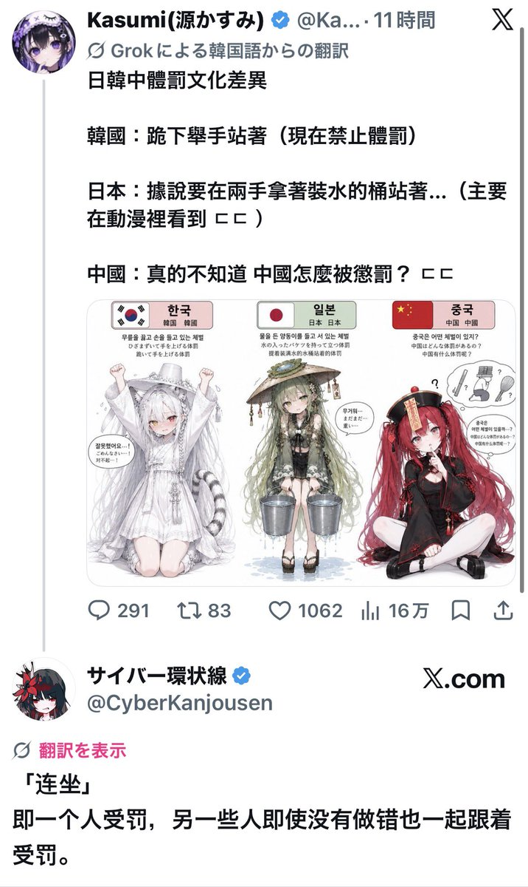
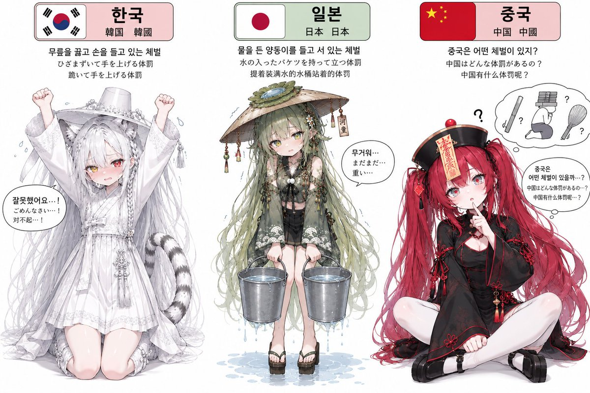

想起来高一的时候，因为宿舍里两个同学讲话被宿管抓到了，于是全寝 8 个人都要罚站，还要站着写完 2,000 字检讨……環状線当时也是其中之一。
中国高中宿舍规定休息时间讲话要「扣分」。但是，少数人犯下的错，却要所有人一起受罚，这是一个法治国家该存在的现象吗？还是说高中根本不需要法治文化？

中国高中宿舍规定休息时间讲话要「扣分」。但是，少数人犯下的错，却要所有人一起受罚，这是一个法治国家该存在的现象吗？还是说高中根本不需要法治文化？


한일중 체벌 문화 차이점
한국 : 무릎 꿇고 손들고 서있음 (지금은 체벌 금지)
일본 : 양동이에 물 넣고 양손에 들고 서있는다는데... (애니에서 주로 봄 ㄷㄷ)
중국 : 진짜 모르겠음 중국은 어떻게 혼나지? ㄷㄷ https://t.co/R5leie0sc1
한국 : 무릎 꿇고 손들고 서있음 (지금은 체벌 금지)
일본 : 양동이에 물 넣고 양손에 들고 서있는다는데... (애니에서 주로 봄 ㄷㄷ)
중국 : 진짜 모르겠음 중국은 어떻게 혼나지? ㄷㄷ https://t.co/R5leie0sc1